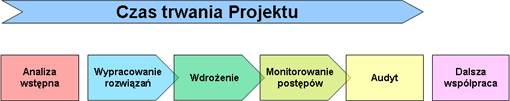

Projekty prowadzone przez Quality Business Advisors podzielone są na pięć głównych faz:

Analiza wstępna
- Identyfikacja potrzeb: obszarów krytycznych i możliwości związanych z procesami biznesowymi i wydajnością
- Oszacowanie potencjału usprawnień - zdefiniowanie priorytetów i celów projektu
- Sporządzenie planu działania: metodologia, kroki, kamienie milowe, ramy czasowe
Wypracowanie rozwiązań
- Mapowanie procesów
- Sesje krytyki
- Budowa optymalnych procesów
- Definiowanie ról i obowiązków
- Budowa strategicznych i operacyjnych wskaźników wydajnościowych
- Obliczenie norm
- Tworzenie narzędzi wspierających zarządzanie
Wdrożenie
- Wybór metodologii wdrożenia
- Budowa harmonogramu wdrożenia
- Definiowanie potrzeb szkoleniowych
- Transfer know-how / szkolenia / coachingi
- Wdrożenie właściwe
- Ocena wdrożonych zmian
Monitorowanie postępów
- Zapewnienie osiągnięcia zamierzonych rezultatów
- Wprowadzenie metodologii ciągłych usprawnień
- Całkowite przekazanie odpowiedzialności kluczowym osobom w organizacji
Audyt
- Audyt wdrożenia
- Okresowe szkolenia
- Okresowa kontrola poprawności funkcjonowania przedsiębiorstwa
- Wsparcie / zastępstwo inwestycyjne w nadzorze nad przedsiębiorstwem
|